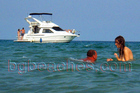
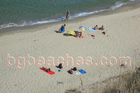
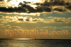
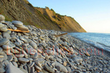
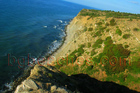
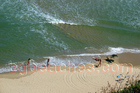
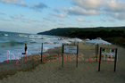
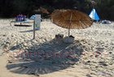
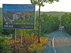

Иракли и Емона
Местността Иракли-Емине има древна и богата и история. Исторически сведения от VII-XIV в. посочват, че пристанището Емона и фара са съществували в географските карти и следователно са били познати на мореплавателите. Районът около средновековния град Емона е бил силно развит, но по време на турското робство запада. Едно нещо обаче никога не се е променяло - красивата природа. Това включва кристална морска вода, златист и фин пясък, гъста и прохладна гора. Плажът на местността Иракли, с дължина 3 километра е особено привлекателен за природолюбители и къмпингари, както и за всички, които обичат сървайвърски и робинзонови приключения. Иракли се намира само на около 10 километра от град Обзор и на 3 километра от село Емона. От 1994 г. Иракли е защитена местност, на която се намира и природен резерват със същото име, последното убежище на застрашени растителни и животински видове, както и на различни видове гъби. Община Несебър се опитва да унищожи с всички сили залива на Иракли. Урбанизацията му изисква забрана на палатки и сплашване на къмпингарите. Глобата, която налага общината за палатка на плажа е 5000 лева (за незаконен строеж е само 4 пъти по голяма). Все още няма забрана за спане на плажа със спален чувал. На около 2 километра от селото Емона се намира и нос Емине, най-източната част на Стара планина.
Изкуство
Сърце
Вълни
Изглед към плажа на Иракли
На зазоряване
Забава
Изобретение- 
Яхта
Скулптура от камък
Врабчета- 
Спокойствие
Рай
Птици
Ято птици
Следи от птици
Екектричество
Изгрев
Опасен терен
Скали- 
Друга снимка на изгрев
Изгрев от Иракли- 
Камъни
Мравки
Емона
Ком-Емине
Нос Емине- 
Граница
Контраст
Фар
Забранено влизането
Село Емона
Улица Чар- 
Поглед от гората на Иракли
Панорама
Поглед отгоре
Палатки- 
Охраняема зона
Чадъри в морето
Бара на Иракли
През деня в Иракли
Чадърите на плажа
Бар на плажа
На плажа след парти
На бара
Край на охраняемата зона
Река Вая
Морски шепот- 
Cafe del mar
На брега
Крайбрежието на Иракли
Граница
Пясък
Нудистка- 
Скандален проект